**Tuple Tunes**
**6.08 Final Project Team 59:** Irene Huang, Si Liang (Brandon) Lei, Jacky Luong, Janette (Jan) Park, Joyce Yuan
Meeting time: 4:30 - 5:00 PM Thursday
# **Overview**
Our goal is to create a multiplayer music making game, where a group of players can easily compose a melody together, take turns adding on to each others’ music, browse others’ compositions, and hear their own melodies played from their very own ESP32. Tuple Tunes is intended to be a lighthearted multiplayer game that can help players with any level of experience familiarize themselves with music making.
# **Purpose**
The purpose of this project is to provide an entertaining music making experience accessible to all. Oftentimes, music making platforms are difficult to access and have a steep learning curve. In our case, we are lowering this barrier by creating a game where people can experiment with creating music no matter their previous musical background, and take ownership of the music they create. We believe that music is something people can learn through experimenting, and our game serves the purpose of allowing others to experiment composing music in an intuitive way. We take care to make sure that the UI is intuitive, and the music composition follows music theory rules so that the songs that are created sound decent without much effort. In addition, players can learn from each other, share their creations with others, and bond over the music they create. We hope to be able to provide a fun game where people can learn to compose music with each other, and spread their love for music.
# **Game Specifics**
* Pre-game - Before the game starts, players have two options: either create a game room or join a game room.
* Start Game - A host can start a game from the landing page. When starting a game, the host chooses a major key and a tempo (slow, mid, fast) to set up the gameroom. After pressing start, the host enters the waiting with their room number, username, and constantly updating number of players.
* Join Game - Players can join a game with a three-digit room number
* Waiting Room - players arrive here from both the start and join game pages, although the waiting room display has an added start game capability for the host (the player who created the game). Once the game is started, all players will transition to the in-game display. The host will be first in turn, and the order of turns takes the order in which players joined the game. The LED display light indicates the turn of the current player (green for in turn, red for out of turn).
* In-game Gameplay (In-turn) - While in turn, players can choose query through a few options:
- Measure number: the measure currently selected to display in the grid; the player can query through previous measures or add to the measure they are composing
- Note selection: the player can select the specific note they wish to add
- Duration selection: the player can specify the duration of this note among the choices of a sixteenth note, eighth note, quarter note, half note, and whole note.
- Add note: clicking this adds the selected note with its specified duration, updating the grid accordingly (a tilde “~” is displayed for every held note over, and an “R” is displayed for each rest)
- Delete note: the player has the option to delete the last most recent added note.
- Submit measure: the player can click this menu option to submit the measure to the server. This updates the player’s screen by incrementing the measure count and changing this player from in-turn to out-of-turn. Subsequently, the next player in order will update to be in-turn, and the LED lights indicate this.
- Menu info: selecting this takes to the game menu info page, which displays both static information about the game (including the song key, tempo, room code, and number of players) on the right side, as well as actionable menu items (including play song, play measure, and leave game) on the left side.
* In-game Gameplay (Out-of-turn) - players have limited options (the rest of the options are hidden)
- Measure number: players can query through previous measures
- Menu: players can access the game menu
* Game Menu - at any time, the game menu provides players with basic information and options they can access at any time. This includes:
- Static: room number, major key, tempo, players, mute/unmute
- Actions items: resume, play song, play measure, mute, and leave game
* End Game - players can access the song that was just created in game. After the game has ended, players may
- Play entire song
- Play the current measure
- Query through all measures and see the notes
- Start over and make a new game by returning to landing page
# **Parts List**
* ESP32
* LCD
* LED
* Button
* Joystick
* Speaker
* Linear Amplifier for Audio Amplification
* 10k Ohm Potentiometer
* 68k Ohm Resistor
* Wires of varying sizes
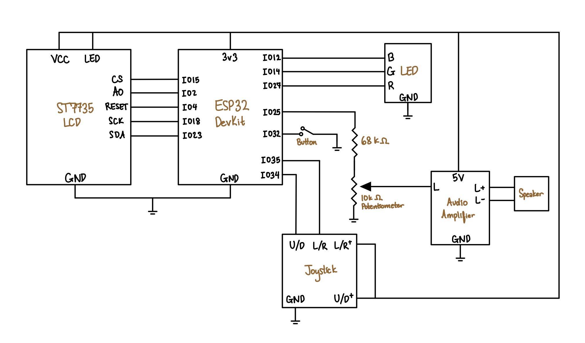
System Schematic
# **State Machine**
State Machine (Frontend Only)
State Machine (with HTTP Requests)
# **Code Organization**
The code is organized into two folders for the Arduino/C++ code for the ESP 32 functionalities and Python server side scripts for backend and database functionalities.
For the **ESP side**, we used several arduino files which are tied and used together.
a.) **Pre-game displays:** First, the screen displays a loading page prior to a landing page, which presents options for starting a new game and joining a game. Based on their selection (using the joystick and button), the user will be taken to the appropriate next page.
In the Start Game page, we display the option to set a key and tempo, as well as a start option and back option (to return to the landing page). In the Join Game page, the system prompts the user to input a three-digit room number using the joystick, and the option to join the game or return back to the landing page. In both the Start and Join game pages, a cursor follows the option the user is currently on. For choosing a key, tempo, and room number, the user can click once to “lock” into making a selection, to which the user can only make selections by moving the joystick left and right. Clicking the button again will take them out of the selection state and back to scrolling up and down across the menu options. One caveat we encoded was that on the Join Game page, the user must input all three digits of a room number in order to lock back out of the selection.
After a user selects the song key and tempo, once they click start, they are the host and the waiting room is enabled and starts. The waiting room displays the room number (a three digit number equivalent to the game code which the joining players input), the player username, and the number of players. When players join the game, they input a game code and join the waiting room. They see their own username and the number of players currently waiting for this game to start, but they do not see an option to start the game. The number of players is being updated every few seconds by a get game status, and if a game is ever started, all players exit the waiting room and arrive in-game. Only the host player (the player who created the game) has power to start the game with a short button push, which makes a post to update the game status. The game status, as mentioned above, is then fetched by all players to update their displays to take to the in game screen.
b.) **In-game displays:** The in-game page displays a grid of four columns, each allotting four sixteenth notes, altogether representing sixteen sixteenth notes in a single measure. Above the grid displays the current rendered measure to the player so they know which measure they are on relative to the maximum measure count as well as for scrolling through the added measures.
To the right of the notes grid is a menu of in-game controls, of which all controls are visible only to the player currently in turn. For a player out of turn, on the in-game page they are only able to scroll through previously submitted measures. The in-game controls are displayed to them but non-functional, and this is indicated by the visual indication of darkened menu options.
For the player in turn, a cursor on the left indicates where the player is during the course of their music composition for this measure. Clicking the button for the first time locks into selection, and the cursor on the left grid turns into a blinking cursor to indicate when a user is changing something for this note (the measure, note, or duration). Clicking the button then turns off the blinking, indicating that the player has made a selection. For measure selection, the user can scroll through the measures, which they can do by locking into and out of the selection choices and using the joystick to scroll left and right again. When the player scrolls to a different measure, the grid on the left is updated with the corresponding notes in that measure. (The only exception is if the player is starting on measure one, in which there are no previous or next measures to scroll through.) For note selection, scrolling left and right using the joystick changes the displayed note while also playing the note so the user can hear as they select which note they would like to add. Scrolling up and down changes the selected symbol. For the duration selection, scrolling left and right using the joystick changes the duration for the current note. (Once again, we use the button to lock into and out of all selection changes.) Adding a note automatically updates the grid of notes on the left so that the cursor is at the correct next note location. Deleting a note deletes the very last note added. Clicking submit submits this measure to the server and increments the measure which the current user is at, also updating their status, changing it from previously in turn to now out of turn. (If a user submits an unfinished measure, the unfinished notes are rendered as rests.)
The last menu option is for the user to go to the game menu info screen. While the right side just displays static information about the game, the left side includes all actionable items, or in other words menu options which the user can act upon. Selecting “Resume” with a short button press takes the user back to the measure they were adding notes to, where previously added notes and the cursor location are preserved on the grid. Making a short button press on “Play Song” will play all the submitted measures in this song in the sequential order in which measures were submitted. Making a short button press on “Play Measure” plays back the composition in the current measure the user was on before coming to the menu screen. Mute allows the user to turn on and off the sound as they wish, and Leave Game takes the user back to the landing page.
c.) **End-game displays:** Using the state machine, once the maximum measure count limit is reached, this signifies game completion, thereafter updating all players’ displays to the end-game screen. After a game has been ended, all players are able to query through the measures of the submitted and finished song. The end-game page is very similar to the format of the in-game displays, although with different menu options. The left side displays the added notes in a grid for the currently selected measure, and the right side menu displays options for playing the whole song, playing the current measure, returning back to the landing page to start or join a new game, or scrolling through the song’s measures. For the first three menu options, the user simply can make a short button press. For the last menu option, scrolling through measures, the player can lock into and out of the selection mode, in consistency with the functionality of scrolling through measures when in-game.
d.) **Hardware - Audio:** Originally, we used the buzzer and its MOSFET from lab to output audio using a square wave signal from pin 26. However, this produced a very electronic and unpleasant sound, so we considered generating a sine wave through pin 26 instead. The MOSFET is a non-linear amplifier, so this sine wave was amplified in a way that distorted the original signal and didn’t produce a noticeably different tone as the square wave. To solve the problem, we used a speaker with a linear audio amplifier and generated a superposition of three sine waves to produce a more pleasant tone (similar to a trumpet sound).
Since the frequencies average around several hundred Hertz, we dealt with microseconds when outputting each value of the signal. Generating a continuous signal from the ESP is very blocking and requires minimal blocking from other processes during the signal generation, so we generated the sound signal through the second core, Core 0, of the ESP. In order to use this second core with this functionality, however, we needed to turn off the watchdog timer for core 0 in the setup. After trial and error with variables and pre-declared arrays, we realized the most consistent and time efficient method of generating the signal was by calculating the signal directly inside the dacWrite using micros(), with nothing else in the core’s loop. At any given time, the value of the signal should be $$\sin{freq*micros()}$$, where `freq` is in radians per microseconds. We kept a global variable called `current_freq` in radians per microsecond, which is what the dacWrite referred to in each loop.
The audio.ino file has a function to play an inputted measure (expressed as an integer array of length sixteen) and a function to play an inputted song (expressed as a 2D array of MEASURE_COUNT number of measure arrays), given the game’s tempo. In the game menu, if “Play measure” is selected, it will play the most recent / current measure. If “Play song” is selected, it will play the entire song thus far. In the game page, while the user is scrolling through the notes to choose the next note, the speaker plays each note for the user’s reference. The permitted notes range from C3 to B5, which is thirty-six notes.
We implemented an option for muting or unmuting the game, which can be toggled by holding the button in the pregame pages or selecting the sound on / off option in the game menu. This would turn off the sound instantaneously, even if it’s muted while a song is playing (the song would stop playing and would not continue playing if unmuted again). The screen also updates immediately in the mute / unmute options: if the system is muted, the screen shows the option “Unmute”, vise versa. Within the system, there is a sound_on boolean that toggles, and an if statement on sound_on determines whether sound is played or not.
The 36 notes in the game are stored in an array called note_freqs as frequencies in radians per microsecond, and playing a note sets current_freq to the corresponding frequency within the array for the dacWrite to generate a signal. When playing a measure, it iterates through each value of the measure array, which is either the corresponding index of the note in note_freqs (0-35), 36 for rest, or 37 for holding the prior note, and plays each note for a sixteenth note amount of time. If the value is 36, it stops sound for a sixteenth note amount of time, and if the value is 37, it doesn’t change the current_freq. It does this up until the last inputted note for this measure (16 notes if the measure is full, or note_state notes if the measure is the current measure in game). When playing a song, it calls play_measure() over all the measures in the song.
e.) **Hardware - LED:** The LED functions using the ESP’s hardware PWM instead of a software PWM to prevent software blocking from other functionalities. In the pregame pages, the LED is a consistent bright blue. When a player is in turn, the color of the light is a consistent bright green. Once a player submits a measure on their turn, their LCD display updates so that the measure is submitted and incremented, and the grid of notes is cleared. The LED light turns a consistent bright red to indicate this player is not out of turn. In general, if any player is not yet playing a game, their light color is blue, if any player is in turn, their light color is green, and all players out of turn have a light color of red.
For the **backend:**
a.) **Database Tables:**
1. In_game: Games Table
''CREATE TABLE IF NOT EXISTS games(game_code int, host text, key int, tempo int, game_status text, turn int, measure int, disconnect_check timestamp, time timestamp);''')
Games - this table contains key information about the each unique game, which are uniquely ID’ed by the row ID that the game info appears in the game datatable
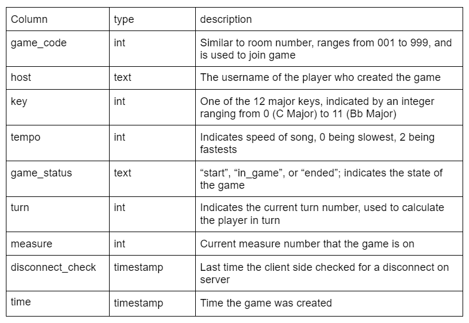
In-game Games Table
2. In_game: Players Table
'''CREATE TABLE IF NOT EXISTS players(game_id real, username text, last_ping timestamp, entry_time timestamp);''')
The players database holds all players playing throughout all the active games. Each entry holds the game_id of the game the player is from, their username, the last time they pinged the server and their entry time into the game.
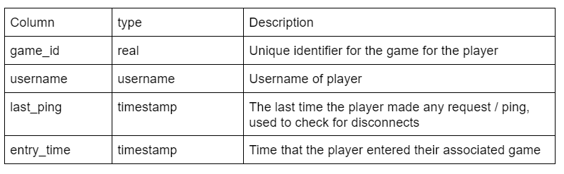
In-game Players Table
3. In_game: Measures Table
'''CREATE TABLE IF NOT EXISTS measures(game_id int, username text, measure_number int, n1 int, n2 int, n3 int, n4 int, n5 int, n6 int, n7 int, n8 int, n9 int, n10 int, n11 int, n12 int, n13 int, n14 int, n15 int, n16 int);
The measures database holds measures of all currently active games. Each measure has a game_id which refers to the id of the game the measure is created, the username of the user that created the measure, the measure number of the current measure within the context of the game, and the 16 notes associated with the measure.
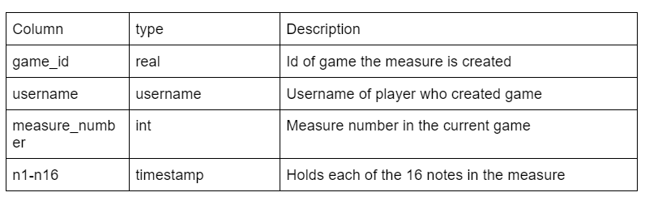
Measures Table
4. Post game (archive database): Games Table
CREATE TABLE IF NOT EXISTS games(game_id real, host text, key int, tempo int, song text);
The games table in the archive database holds information regarding completed games. Each entry contains its game_id, username of the cost, the key and tempo of the game and completed song as a string.
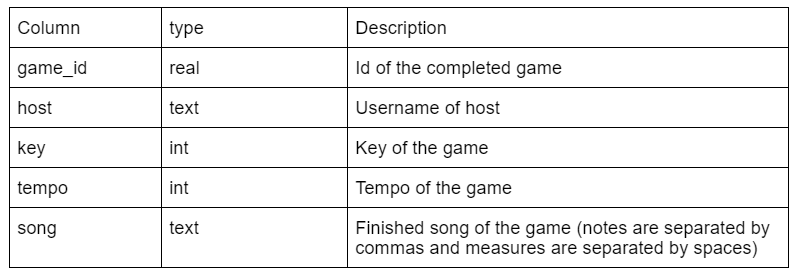
Post-game Games Table
5. Post game (archive database): Players Table
CREATE TABLE IF NOT EXISTS players(game_id real, username text);
The players table in the archive database will hold all the players present in a completed game. Each entry holds the game_id, which refers to the id of the game the player was playing in. Furthermore, there is a username field which refers to the username (text) of the current player.
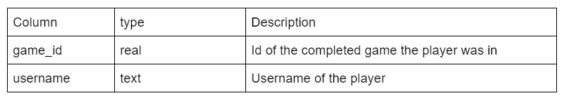
Post-game Players Table
b.) **Server Side Scripts/Request and API Endpoints:**
**Start Game:**
URL: http://608dev-2.net/sandbox/sc/team59/server/init.py
Notes: If insufficient or invalid arguments are provided, the server will return “-1”
This API endpoint should be used for all start_game functionality
1. Create Game
* Purpose: Allow host to create a new game with key and tempo
* Request Type: POST
* Arguments Provided in Body
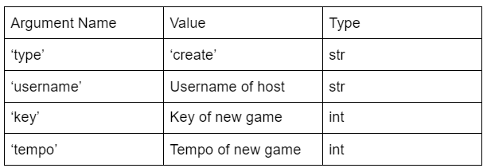
Create Game Body Arguments Table
* Return String (F-string format)
- “{game_code_string}&{game_id}”
- Game code string is a 3 length string that holds the game code (from 000 to 999)
- Game id refers to id of newly created game in the database (unique identifier)
2. Join Game
* Purpose: Allow players to join a game with game code
* Request Type: POST
* Arguments Provided in Body
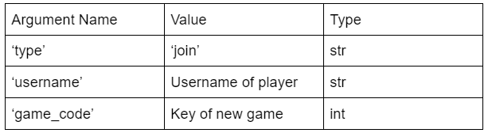
Join Game Body Arguments Table
* Return String (F-string format)
- No Game Room Found
* “0”
- Game Room Found but Capacity Limit Reached
* “1”
- Game Room has already started/ended
* “2”
- Successful!
* “3&{game_id}&{key}&{tempo}
* Game_id refers to the id of the game in the database
* Key and Tempo refer the key and tempo of the game joined respectively
3. Start Game
* Purpose: Allow host to start game with game_id
* Request Type: POST
* Arguments Provided in Body
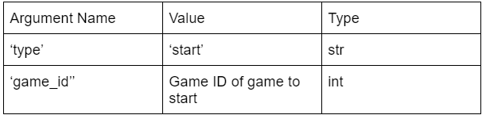
Start Game Body Arguments Table
* Return String (F-string format)
- Game ID invalid
* “0”
- Successful!
* “1”
- Game Has Started/Ended
* “2”
4. Fetch Game
* Purpose: Allow players in waiting room to get status of game
* Request Type: GET
* Arguments Provided in URL
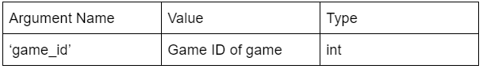
Fetch Game URL Arguments Table
* Return String (F-string format)
- Invalid Game ID
* “0”
- Game is in start state (waiting room)
* ”1&{num_players}&{player_names}”
- Num_players is the number of players currently in the waiting room of the current game
- Player_names is a string of current player usernames separated by “,”
*Ex: “BBB,Jacky,Joyce,Jan,Irene”
- Game is in progress
* “2”
- Game has ended
* “3”
**In Game:**
URL: http://608dev-2.net/sandbox/sc/team59/server/logic.py
Notes: If insufficient or invalid arguments are provided, the server will return “-1”
This API endpoint should be used for all in_game functionality (during the game)
1. Fetch Game
* Purpose: Update players with latest game state information
* Request Type: GET
* Arguments Provided in Body
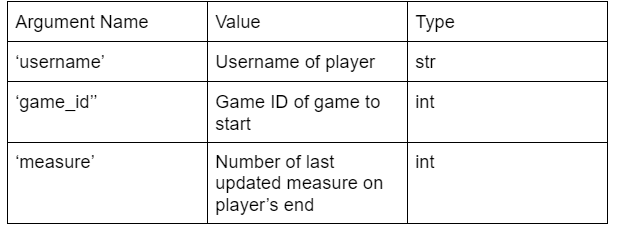
Fetch Game Body Arguments Table
* Return String (F-string format)
- Game Has Ended/ no players remaining
* "-1"
- In Game
* ”{player_in_turn}&{measure_num}&{song}”
* Player_in_turn refers to username of the player currently in turn
* Measure_num: last updated measure number (1 indexed) on the esp 32 client side
* Song: measure separated by spaces. Each note in measure separated by “,”
2. New Measure
* Purpose: Allow players to submit their measures
* Request Type: POST
* Arguments Provided in Body
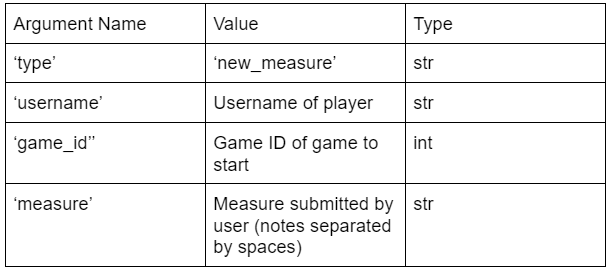
New Measure Body Arguments Table
* Return String (F-string format)
- Successful!
* “1”
3. Ping
* Purpose: Allow players to update their latest ping on server side
* Request Type: POST
* Arguments Provided in Body
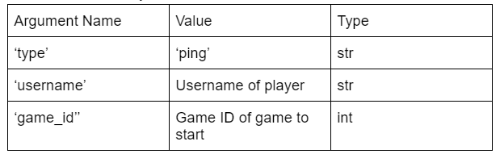
Ping Body Arguments Table
* Return String (F-string format)
- No return statement
4. Leave Game
* Purpose: Allow players to leave the current game
* Request Type: POST
* Arguments Provided in Body
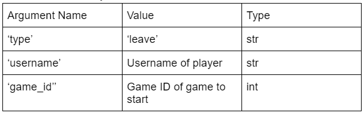
Leave Game Body Arguments Table
* Return String (F-string format)
- No return statement
c.) **Disconnect:** There is an entry within every game entry in the games table called disconnect_check that holds the timestamp of the most recent check for disconnect. A disconnect check happens whenever it has been at least 30 seconds since the last check for a disconnect. During a disconnect check, we check for all players who haven't made a fetch or ping request to the server for 20 seconds (the difference between their last ping and the current time exceeds 20 seconds). The players that fit that condition are the ones that have disconnected (wire broken, lost wifi etc.), and they will be removed from the game. The internal game state on the server including the player in turn and the number of players will update accordingly.
On the interface of the ESP 32 side, there is a button that allows a player to leave the game that they are currently in. Whenever a player clicks this button, the ESP 32 client will make a POST request to the server to an endpoint that handles LEAVE game functionality. At this endpoint, we remove the player from the database and update the internal game state accordingly, including the player currently in turn.
d.) **Garbage Collection:** Garbage collection functionality has been implemented for the server side. Whenever a player leaves a game, they are removed from the in game players database and moved to the archive players database. Whenever a game ends (either the max number of measures is hit or there are no more players in the game), the game, associated measures and players are removed from the current database and moved to an archive database. Furthemore, whenever a host creates a game, there is a check throughout the games database to garbage collect any games that have been inactive for 24 hrs.
e.) **Web Page:** There is now a gallery web application that displays all games in the archives database organized by chronological order (from most recent to least recent). Each game entry on the web page shows the host name, key, tempo, players and measures associated with the game. The link the web app can be found here: http://608dev-2.net/sandbox/sc/team59/server/main.py
For **connecting frontend and backend**:
a.) **Internal Representation:** Notes are represented by integers zero through thirty-seven, representing notes C3 to B5, and thirty-six representing rest, thirty-seven representing hold.
The first note and permanent offset is the selected key. The notes of the correct major scale are correctly displayed on screen through modding the internal representation of the notes.
We keep track of scale steps in a way such that every movement left and right on the joystick will reach the next note on the major scale we chose (using the array [0, 2, 2, 1, 2, 2, 2, 1] for scale steps). We keep track of sharps and flats through another variable name, adjustment, which will apply a shift of -2, -1, 0, 1, or 2 to the note index before adding it to the measure.
Notes also account for edge cases of shifting past our notes we can play, which are only C3 to B5.
Notes to the internal representation [here](https://docs.google.com/document/d/1VYwCYNnxafChDDgw8vDYik9komqVKzfOJZl6qg0fbE4/edit?usp=sharing).
b.) **HTTP Requests:** The http_helpers.ino file contains all the templates for the requests, while the http.ino file contains all of HTTP requests:
submit_measure() submits a measure to the server, which sends a POST request with parameters of the game_id, ‘new_measure’, the user who submitted the measure, and a string of 16 integers separated by a space.
create_game_http() makes a POST request to init.py and retrieves back the game code and game ID that will later be used to get other players to join.
join_game_http() makes a POST request to init.py and receives the game ID of the game with the specified code. If unsuccessful, nothing happens on the ESP side.
fetch_game_state() makes a GET request to logic.py and receives the name of the player in turn, the current newest measure in the game, and the measures that the current player still needs to be fully updated/synced with the game state.
ping() makes a POST request to logic.py with the game ID and username so the server knows to update the last time it heard from this user (information to be used later that will determine if a player has timed out/disconnected).